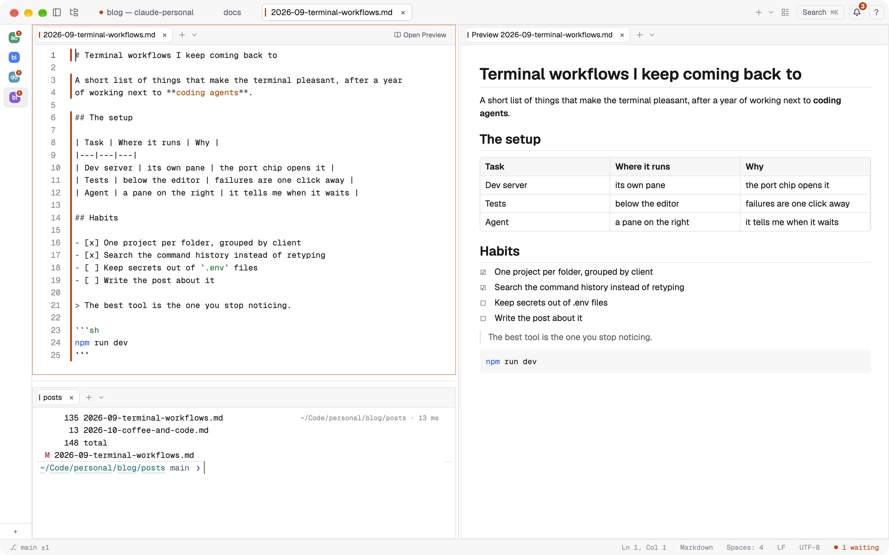
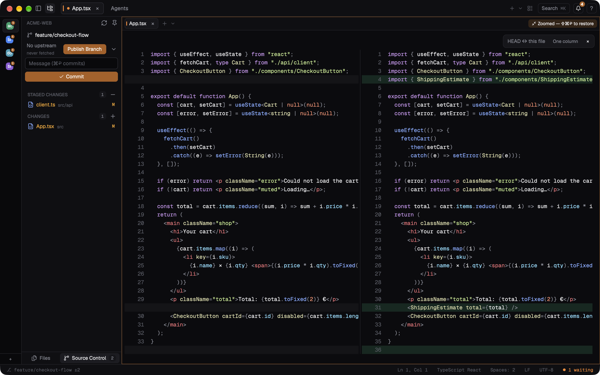
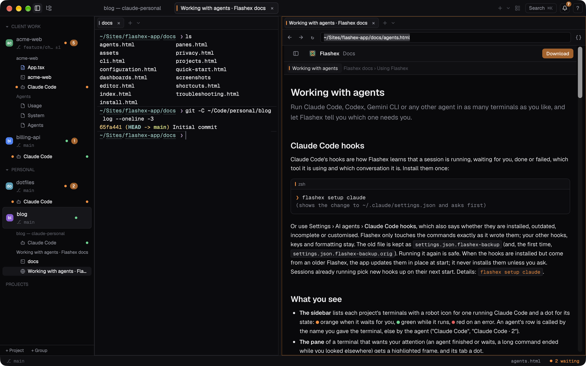

Editor, Git and the browser panel
Open files next to your terminals, commit without leaving the window, and look at your local pages in a pane.
The code editor
Open a file with ⌘P (files of the project), from the file tree (⌘B; ⌘0 focuses it), with ⌘-click on a path in a terminal, or with flashex open src/main.rs:10. ⌥⌘N makes a new file, ⌘S saves and ⇧⌘S saves as.
- Highlighting (tree-sitter) for Rust, TypeScript, JavaScript, Python, Go, Swift, Kotlin, JSON, TOML, YAML, Markdown, Bash, HTML, CSS and SQL, including languages embedded in others. Click the language in the status bar to pick another; click the indentation for what Tab inserts or to convert the file's indentation; click LF or CRLF for the line endings it is saved with.
- Multiple cursors in the style of Sublime Text and VS Code: ⌘D adds the next occurrence, ⌃⌘G selects all, ⇧⌘L puts a cursor on every selected line, ⌥↑ ⌥↓ move lines, ⌘/ comments.
[keys] profileswitches to Sublime Text or VS Code conventions. - Find ⌘F, replace ⌥⌘F, go to line ⌃G, word wrap ⌥Z, diff against git ⌃⇧G.
- A minimap on the right of a pane wide enough for it (
minimap). - Hot exit: untitled files and unsaved changes come back after quitting, as in Sublime Text (
hot_exit). - Pictures (PNG, JPEG, GIF, WebP, HEIC, SVG and more) open in an image tab with their size.
Language servers
Language servers already installed on your system (rust-analyzer, typescript-language-server, pyright, gopls, sourcekit-lsp, …) give diagnostics, go to definition (F12), references (⇧F12), hover (⌘I), completion (⌃Space or ⌥Esc) and rename (F2); ⌃- goes back. Flashex does not download servers: the palette's Language Servers… lists each language's server, whether it is found and how to install it. A server starts with the first file of its language and stops after 10 minutes without use. Servers that run a project's own code (Rust, TypeScript, Go, Swift, Kotlin) ask first in a folder that is not one of your projects ([lsp] trust). [lsp] turns servers off or sets their command.
Markdown preview
⇧⌘V shows a Markdown file's preview in place of its text, and ⌥⌘V opens it to the side, following what you type. Tables, checklists, pictures from your Mac and links to headings work.

Source Control

The file tree's Source Control view shows the branch, how it stands against its upstream, and staged and unstaged changes. Click a file for its side-by-side diff against HEAD (a staged file: the staged version against HEAD), then stage, unstage or discard it. Commit with ⌘↩, using your own git config (signing and hooks). One button does Pull, Push, Sync, Publish Branch or Fetch, whichever fits; Git: Pull, Git: Push and Git: Sync are in the Git menu and the palette too. ⌥⌘B switches or creates branches.
Git never prompts for credentials (a pull or push that needs a sign-in says so and how to fix it), and nothing is stashed, merged or forced without asking. Background fetching is off unless you set [git] autofetch_minutes.
The browser panel
⇧⌘B opens a browser panel. ⌘-click on a localhost or 127.0.0.1 link in a terminal opens it there (other links open in your browser; local_urls_in_panel), as does a web server chip or flashex browse localhost:3000.
| In a browser panel | Press |
|---|---|
| Focus the address bar | ⌘L |
| Reload | ⌘R |
| Back / forward | ⌘[ ⌘] |
Developer tools (when devtools is on) | ⌥⌘I |
Local pages

flashex browse ./agents.html.The browser panel shows HTML, SVG and PDF files from your Mac too. Type a path in the address bar (/Users/you/site/index.html, ~/site/index.html, ./docs/index.html or a name in the project's folder) or a file:// address; a folder shows its index.html. The bar shows the path, with your home folder as ~. Other ways in: Open in Browser in the file tree's right-click menu, Open Preview (⇧⌘V) in an HTML file's editor, dropping a file on a browser panel, and flashex browse ./index.html.
A page may read its own folder, so its styles, scripts, pictures and links to the pages next to it work (and a folder linked from it one level up, such as a docs site's screenshots); nothing else on the disk. ⌘R reads the file again after you change it. Web pages can never open your files.
Text typed in the address bar that is not an address is searched with DuckDuckGo (search_url; "" turns it off). Browser tabs out of sight for 10 minutes are unloaded (sleep_after_minutes). The Linux beta has no browser panel.